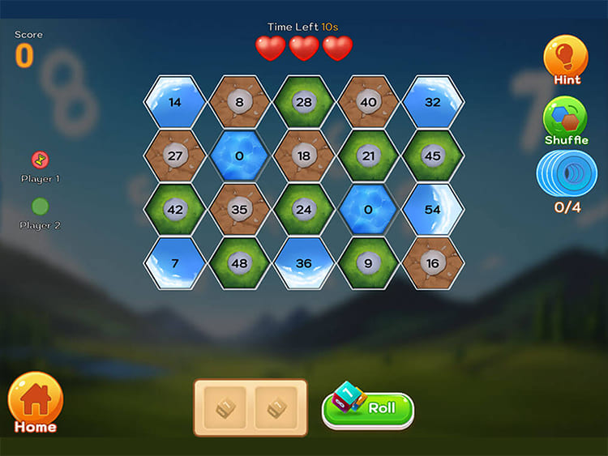

A small multiplayer game, built end to end
Solo-developed a small 2–4 player turn-based math/board game, covering gameplay, UI, AI, multiplayer, player accounts, and analytics.
My responsibility
I was the sole developer, so the gameplay, UI, AI, multiplayer, accounts, and analytics integration were all mine.
Everything (solo)
- Gameplay and UI
- AI opponent/fill behavior
- Photon PUN2 multiplayer
- PlayFab accounts/progression
- Firebase Analytics / Crashlytics integration
Multiplayer model
Duel X uses Photon PUN2 with random matchmaking and Master Client coordination. Turns, timers, and game state are synchronized through RPCs and PhotonViews, and the shared board data is reconstructed locally on each client.
- Random matchmaking
- Master Client coordination
- RPC / PhotonView syncturns, timers, lives, score
- Shared board reconstructed locally
Evidence-backed work
- Photon PUN2
- Random matchmaking
- Master Client coordination
- RPC / PhotonView synchronization
- Turn state and timers
- Shared board data reconstructed locally
- Player lives/score/game state
- AI opponent/fill behavior
- PlayFab accounts/progression
- Firebase Analytics / Crashlytics
Cross-client testing
- WebGL and Android cross-client testing
- Latency testing up to approximately 200 ms
What this project does not demonstrate
- No robust reconnect/rejoin/state restoration
- Client-host/shared PUN2 architecture rather than dedicated authoritative server architecture
- No demonstrated prediction/reconciliation/lag compensation
- No anti-cheat/security architecture
Media
